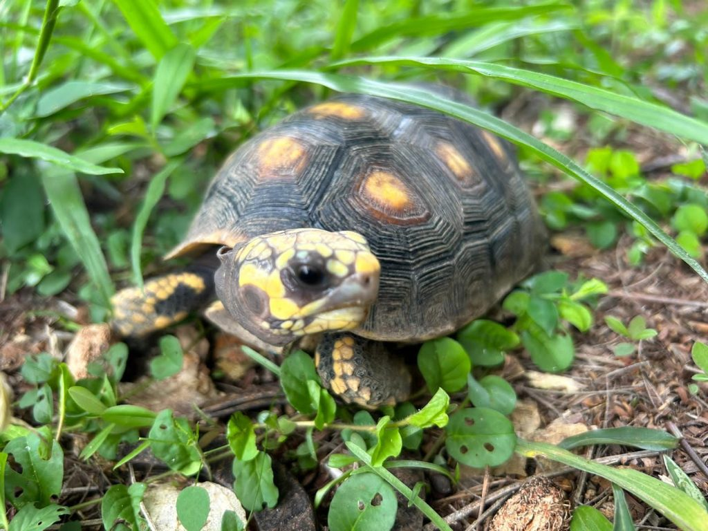
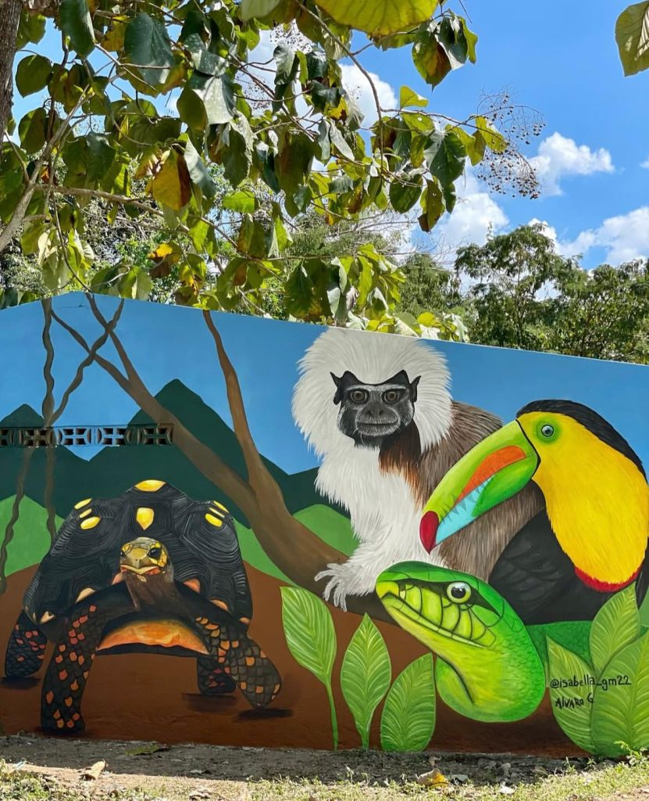

Morrocoy Nature Reserve
The Morrocoy Nature Reserve in Cascajo, El Salado (Carmen de Bolívar), is where Sembrandopaz integrates ecological and restorative justice, healing conflict wounds while fostering sustainable development. In 2023, the Crecer en Paz Foundation gifted over 1,000 acres—mostly private nature reserve—to Sembrandopaz, which is committed to conserving and reforesting the Tropical Dry Forest, one of the world’s most endangered ecosystems.

Home to thousands of plant species and endangered wildlife such as the Cottontop Tamarin, the Reserve also includes San Pedrito, a 24-acre site with eco-tourism facilities and an environmental education center. Programs like School in the Forest and Ecological Youth Protectors teach children and youth to care for the forest, themselves, and their communities.
